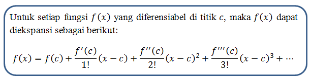

Error in numerical computation¶
ERROR¶
Error merupakan perbedaan antara hasil akhir dari sebuah penyelesaian suatu model matematik secara numeric dengan penyelesaian secara analitis. Kesalahan yang terjadi sangatlah berdampak penting dan bisa dikatakan daruratc, karena kesalahan dalam pemakaian algoritma pendekatan akan menyebabkan nilai kesalahan yang besar. Sehingga pendekatan metode numerik selalu membahas tingkat kesalahan dan tingkat kecepatan proses yang akan terjadi.
NILAI ERROR¶
Besarnya kesalahan atas suatu nilai taksiran dapat dinyatakan secara kuantitatif dan kualitatif. Besarnya kesalahan yang dinyatakan secara kuantitatif disebut Kesalahan Absolut. Besarnya kesalahan yang dinyatakan secara kualitatif disebut dengan kesalahan Relatif.
Absolut error¶
Kesalahan absolut suatu kuantitas adalah nilai absolut dari selisih antara nilai sebenarnya X dan nilai perkiraan x. Ini dilambangkan dengan
$$ Ea = |X - x| $$
kesalahan Relatif¶
Relative error biasa disebut sebagai kesalahan relatif dari suatu kuantitas adalah rasio kesalahan absolutnya terhadap nilai sebenarnya. Ini dilambangkan dengan Er.
$$ Er = |Xt - Xa / Xt| $$
PENYEBAB TERJADINYA ERROR¶
Dibedakan dalam beberapa macam :
1.Round-off-errors¶
Perhitungan dengan metode numerik hampir selalu menggunakan bilanganriil.Masalah timbul bila komputasi numerik dikerjakan oleh mesin (dalam hal ini komputer) karena semua bilangan riil tidak dapat disajikan secara tepat di dalamkomputer. Keterbatasan komputer dalam menyajikan bilangan riil menghasilkangalat yang disebut galat pembulatan. Sebagai contoh 1/6 = 0.166666666… tidak dapat dinyatakan secara tepat oleh komputer karena digit 6 panjangnya tidak terbatas. Komputer hanya mampu merepresentasikan sejumlah digit (atau bit dalam sistem biner) saja.
2.Truncation errors¶
Kesalahan pemotongan terjadi ketika suatu rumus komputasi disederhanakan dengan cara membuang suku yang berderajat tinggi.

True Error Didefinisikan sebagai beda antara nilai eksak dalam penghitungan dan pendekatan menggunakan metode numerik.
3.Inherent error¶
DEFINISI MACLAURIN¶
Suatu fungsi f(x) yang memiliki turunan
,
,
, dan seterusnya yang kontinyu dalam interval
dengan
maka untuk
disekitar
yaitu
,
dapat diekspansi kedalam Deret TaylorDefinisi.
Berikut algoritma dari maclaurin¶

Dengan algoritma diatas kita dapat menyerderhanakannya sebagai berikut:

berikut contoh implementai dari maclaurin
f(x)= e2x $$ f(x)≈1+2x \displaystyle+\frac{{{{f}^{{\text{}}}{\left({2x^2}\right)}}}}{{{3}!}} \displaystyle+\frac{{{{f}^{{\text{}}}{\left({2x^3}\right)}}}}{{{3}!}} \displaystyle+\ldots+… $$
sekarang kita masukan misal x=0 $$ f(0)≈1+2(0) \displaystyle+\frac{{{{}^{{\text{}}}{\left({2(0)^2}\right)}}}}{{{3}!}} \displaystyle+\frac{{{{}^{{\text{}}}{\left({2(0)^3}\right)}}}}{{{3}!}} \displaystyle+\ldots+… $$
jadi ketika x =0 maka hasil akan tetap 1 mekipun banyak suku dan literasi
Listing Program¶
membuat program supaya dapaat mengekspansi bilangan e^3x dengan nilai x=4 hingga nilai menjadi kurang dari 0,001 bisa dengan listing program sebagai berikut.
import math
coba = 1
a = 0
b = 1
x = int(input("masukkan x = "))
while coba> 0.001:
f_x = 0
f_y = 0
for i in range(a):
f_x += (2**i)*x**i/math.factorial(i)
for j in range(b):
f_y += (2**j)*x**j/math.factorial(j)
print("suku ke ", a, "=", f_x)
print("suku ke ", b, "=", f_y)
coba = f_y-f_x
a+=1
b+=1
print("selisih sukunya = ", coba)
output:
masukkan x = 1
suku ke 0 = 0
suku ke 1 = 1.0
selisih sukunya = 1.0
suku ke 1 = 1.0
suku ke 2 = 3.0
selisih sukunya = 2.0
suku ke 2 = 3.0
suku ke 3 = 5.0
selisih sukunya = 2.0
suku ke 3 = 5.0
suku ke 4 = 6.333333333333333
selisih sukunya = 1.333333333333333
suku ke 4 = 6.333333333333333
suku ke 5 = 7.0
selisih sukunya = 0.666666666666667
suku ke 5 = 7.0
suku ke 6 = 7.266666666666667
selisih sukunya = 0.2666666666666666
suku ke 6 = 7.266666666666667
suku ke 7 = 7.355555555555555
selisih sukunya = 0.08888888888888857
suku ke 7 = 7.355555555555555
suku ke 8 = 7.3809523809523805
selisih sukunya = 0.025396825396825307
suku ke 8 = 7.3809523809523805
suku ke 9 = 7.387301587301587
selisih sukunya = 0.006349206349206327
suku ke 9 = 7.387301587301587
suku ke 10 = 7.3887125220458545
selisih sukunya = 0.0014109347442676778
suku ke 10 = 7.3887125220458545
suku ke 11 = 7.388994708994708
selisih sukunya = 0.0002821869488531803